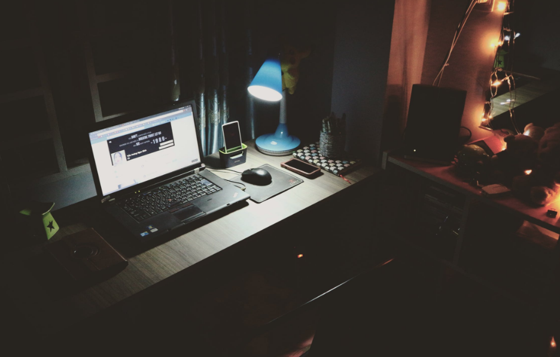
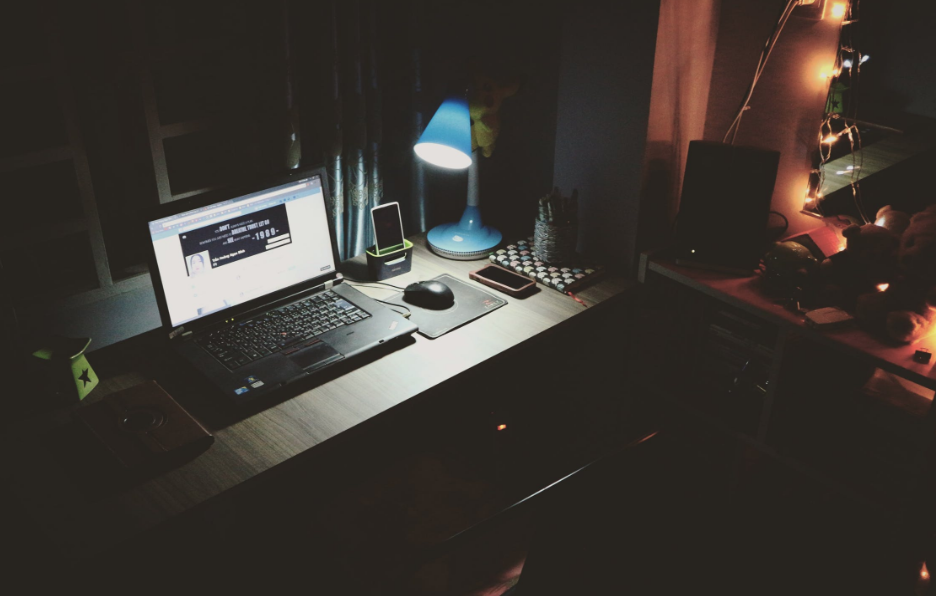

Hi!
I'm Caleb
T. Mashonganyika
Graphics and
web designer.

Explore
ABOUT

About Caleb Tinotenda Mashonganyika
Caleb Tinotenda Mashonganyika, based in Bulawayo, Zimbabwe, wears multiple creative hats:
Graphic Designer:
Caleb crafts visual narratives that blend aesthetics and functionality. From logos to print collateral, his designs breathe life into ideas.
Web Developer:
With lines of code, Caleb weaves responsive websites that dance across screens. User experience is his guiding star.
Printing Industry Enthusiast:
Caleb’s hands touch ink and paper. Receipt books, invoice books, business cards—his creations tell stories in print.
Connect with Caleb as he paints pixels, codes dreams, and prints magic!
SKILLS
In Web Developing:
User Experience (UX) Design: Understanding how users interact with websites and creating intuitive, user-friendly interfaces.
User Interface (UI) Design: Choosing fonts, layouts, and graphics for buttons, menus, and other elements.
Search Engine Optimization (SEO): Optimizing websites for better search engine performance.
Cross-Browser and Cross-Platform Compatibility: Ensuring websites work well across different browsers and devices.
In Graphic Designing:
Graphic Design Software: Proficiency in tools like Corel Draw, Adobe Photoshop, Illustrator, and other design software.
HTML and CSS: Basic knowledge of web technologies to create visually appealing designs.
Creativity and Visual Communication: Translating ideas into compelling visuals and communicating messages effectively.
Attention to Detail: Precise alignment, color choices, and typography matter in graphic design
 


Hi!
I'm Caleb
T. Mashonganyika
Graphics and
web designer.
Contact
ABOUT
About Caleb Tinotenda Mashonganyika
Caleb Tinotenda Mashonganyika, based in Bulawayo, Zimbabwe, wears multiple creative hats:
Graphic Designer:
Caleb crafts visual narratives that blend aesthetics and functionality. From logos to print collateral, his designs breathe life into ideas.
Web Developer:
With lines of code, Caleb weaves responsive websites that dance across screens. User experience is his guiding star.
Printing Industry Enthusiast:
Caleb’s hands touch ink and paper. Receipt books, invoice books, business cards—his creations tell stories in print.
Connect with Caleb as he paints pixels, codes dreams, and prints magic!
SKILLS
Web Developers:
User Experience (UX) Design: Understanding how users interact with websites and creating intuitive, user-friendly interfaces.
User Interface (UI) Design: Choosing fonts, layouts, and graphics for buttons, menus, and other elements.
Search Engine Optimization (SEO): Optimizing websites for better search engine performance.
Cross-Browser and Cross-Platform Compatibility: Ensuring websites work well across different browsers and devices.
Graphic Designers:
Graphic Design Software: Proficiency in tools like Adobe Photoshop, Illustrator, and other design software.
HTML and CSS: Basic knowledge of web technologies to create visually appealing designs.
Creativity and Visual Communication: Translating ideas into compelling visuals and communicating messages effectively.
Attention to Detail: Precise alignment, color choices, and typography matter in graphic design